26 Comunicar con gráficos
26.1 Introducción
En [análisis de datos exploratorios] aprendistes a usar gráficos como herramientas de exploración. Cuando haces gráficos exploratorios, sabes incluso antes de mirar, qué variables mostrará el gráfico. Hicistes cada gráfico con un propósito, lo miraste rápidamente y luego pasaste al siguiente. En el transcurso de la mayoría de los análisis, producirás decenas o cientos de gráficos, muchos de los cuales se desecharán inmediatamente.
Ahora que comprendes tus datos, debes comunicar tu conocimiento a los demás. Es probable que tu audiencia no comparta tus conocimientos previos y no esté profundamente involucrada en los datos. Para ayudar a otros a construir rápidamente un buen modelo mental de los datos, deberás invertir un esfuerzo considerable para que tus gráficos se expliquen por sí solos . En este capítulo, aprenderás algunas de las herramientas que proporciona ggplot2 para hacerlo.
Este capítulo se centra en las herramientas necesarias para crear buenos gráficos. Supongo que sabes lo que quieres y solo te falta saber cómo hacerlo. Por esa razón, recomiendo combinar este capítulo con un buen libro de visualización general. Me gusta especialmente The Truthful Art, de Albert Cairo. No enseña la mecánica de crear visualizaciones, sino que se enfoca en lo que necesitas pensar para crear gráficos efectivos.
26.1.1 Prerrequisitos
En este capítulo, nos centraremos una vez más en ggplot2. También usaremos un poco el paquete dplyr para la manipulación de datos y algunos paquetes como ggrepel y viridis que extienden las funciones de ggplot2. En lugar de cargar esas extensiones aquí, nos referiremos a sus funciones de forma explícita, utilizando la notación :: . Esto ayudará a aclarar qué funciones están integradas en ggplot2 y cuáles vienen de otros paquetes. No olvides que deberás instalar esos paquetes con install.packages() si aún no los tienes.
library(tidyverse)
library(datos)26.2 Etiquetas
El punto de inicio más sencillo para convertir un gráfico exploratorio en un gráfico expositivo es con buenas etiquetas. Agrega etiquetas con la función labs(). Este ejemplo agrega un título al gráfico:
ggplot(millas, aes(motor, autopista)) +
geom_point(aes(color = clase)) +
geom_smooth(se = FALSE) +
labs(title = "La eficiencia en el uso de combustible disminuye con el tamaño del motor")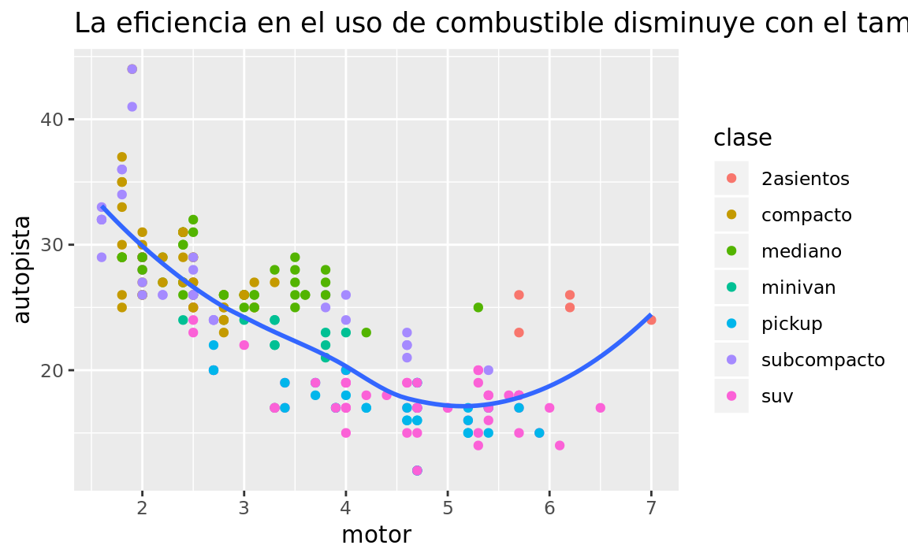
El propósito del título de un gráfico es resumir el hallazgo principal. Evita títulos que simplemente describen el gráfico, por ejemplo “Diagrama de dispersión del desplazamiento del motor frente al ahorro de combustible”.
Si necesitas agregar más texto, hay otras dos etiquetas útiles que puedes usar en ggplot2 versión 2.2.0 y superiores (que deberían estar disponibles para cuando estés leyendo este libro):
el
subtítulo, del inglés subtitle, agrega detalles adicionales en una fuente más pequeña debajo del título.la
leyenda, del inglés caption, agrega texto en la parte inferior derecha del gráfico, suele usarse para describir la fuente de los datos.
ggplot(millas, aes(motor, autopista)) +
geom_point(aes(color = clase)) +
geom_smooth(se = FALSE) +
labs(
title = "La eficiencia en el uso de combustible disminuye con el tamaño del motor",
subtitle = "Los automóviles deportivos de dos asientos son la excepción debido a su peso liviano",
caption = "Datos de fueleconomy.gov"
)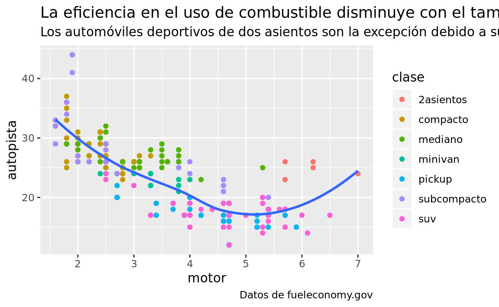
También puedes usar labs() para reemplazar los títulos de ejes y leyendas. Por lo general, es una buena idea reemplazar los nombres cortos de las variables con descripciones más detalladas e incluir las unidades.
ggplot(millas, aes(motor, autopista)) +
geom_point(aes(colour = clase)) +
geom_smooth(se = FALSE) +
labs(
x = "Desplazamiento del motor (L)",
y = "Economía de combustible de carretera (millas)",
colour = "Tipo de automóvil"
)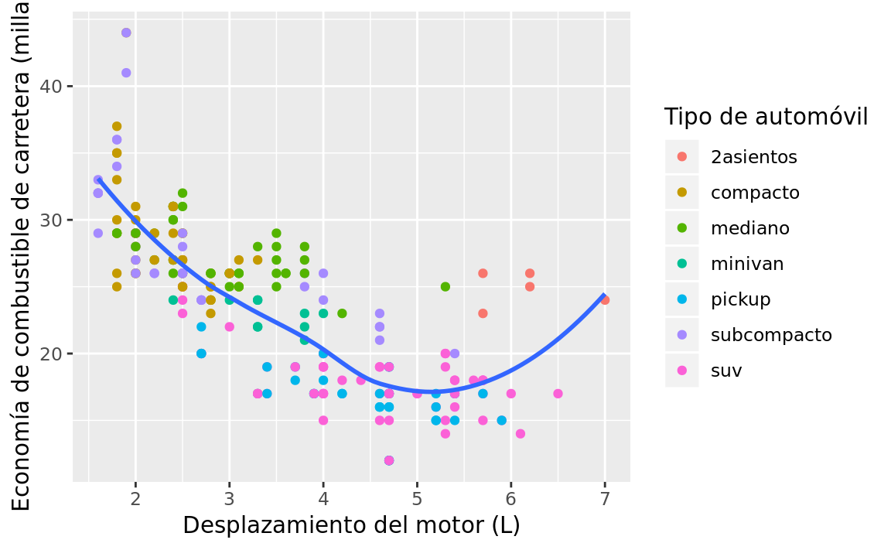 Es posible usar ecuaciones matemáticas en lugar de cadenas de texto. Simplemente cambia "" por quote() y lee acerca de las opciones disponibles en ?plotmath:
df <- tibble(
x = runif(10),
y = runif(10)
)
ggplot(df, aes(x, y)) +
geom_point() +
labs(
x = quote(sum(x[i]^2, i == 1, n)),
y = quote(alpha + beta + frac(delta, theta))
)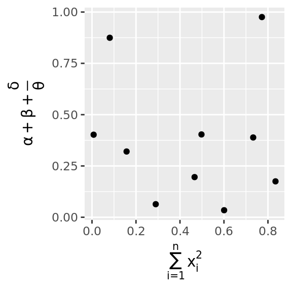
26.2.1 Ejercicios
Crea un gráfico partiendo de los datos de economía de combustible con etiquetas para
title,subtitle,caption,x,yycolorpersonalizadas.La función
geom_smooth()es un poco engañosa porqueautopistaestá sesgada positivamente para motores grandes, debido a la inclusión de autos deportivos livianos con motores grandes. Usa tus herramientas de modelado para ajustar y mostrar un modelo mejor.Elige un gráfico exploratorio que hayas creado en el último mes y agrégale títulos informativos para volverlo más fácil de comprender para otros.
26.3 Anotaciones
Además de etiquetar las partes principales de tu gráfico, a menudo es útil etiquetar observaciones individuales o grupos de observaciones. La primera herramienta que tienes a tu disposición es geom_text(). La función geom_text() es similar a geom_point(), pero tiene una estética adicional: label. Esto hace posible agregar etiquetas textuales a tus gráficos.
Hay dos posibles fuentes de etiquetas. En primer lugar, es posible tener un tibble que proporcione las etiquetas. El siguiente gráfico no es en sí terriblemente útil, pero si lo es su enfoque: filtrar el auto más eficiente de cada clase con dplyr, y luego etiquetarlo en el gráfico:
mejor_de_su_clase <- millas %>%
group_by(clase) %>%
filter(row_number(desc(autopista)) == 1)
ggplot(millas, aes(motor, autopista)) +
geom_point(aes(colour = clase)) +
geom_text(aes(label = modelo), data = mejor_de_su_clase)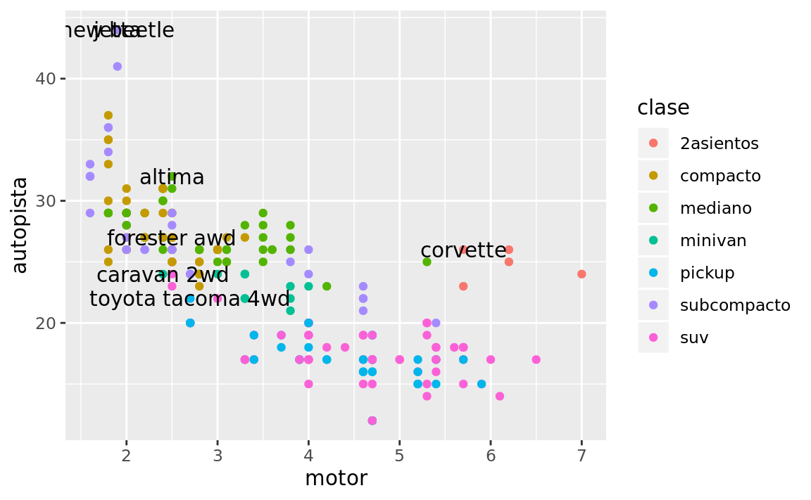
Esto es difícil de leer porque las etiquetas se superponen entre sí y con los puntos. Podemos mejorar ligeramente las cosas cambiando por geom_label(), que dibuja un rectángulo detrás del texto. También usamos el parámetro nudge_y para mover las etiquetas ligeramente por encima de los puntos correspondientes:
ggplot(millas, aes(motor, autopista)) +
geom_point(aes(colour = clase)) +
geom_label(aes(label = modelo), data = mejor_de_su_clase, nudge_y = 2, alpha = 0.5)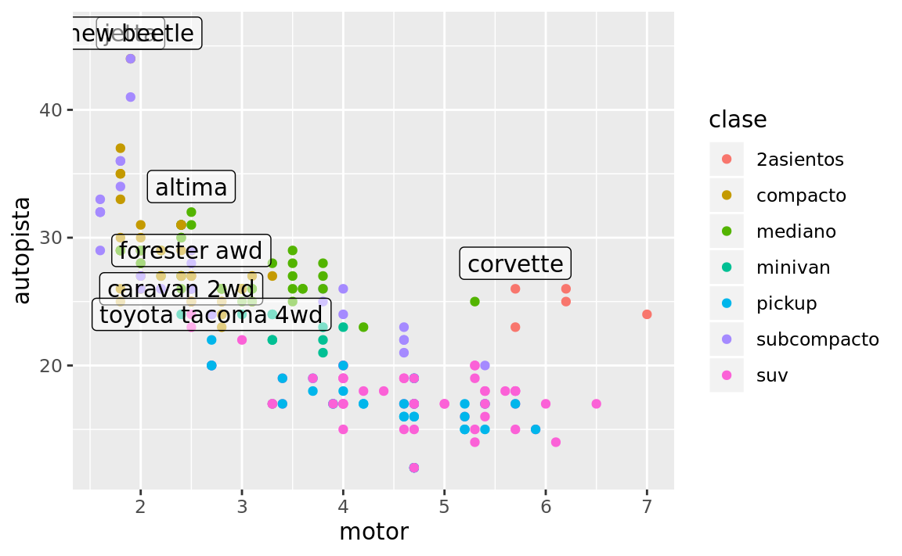
Esto ayuda un poco, pero si te fijas bien en la esquina superior izquierda verás que hay dos etiquetas prácticamente una encima de la otra. Esto sucede porque el kilometraje y el desplazamiento para los mejores automóviles en las categorías de compactos y subcompactos son exactamente los mismos. No hay forma de que podamos solucionar esto aplicando la misma transformación para cada etiqueta. En cambio, podemos usar el paquete ggrepel de Kamil Slowikowski. Este paquete es muy útil ya que ajusta automáticamente las etiquetas para que no se superpongan:
ggplot(millas, aes(motor, autopista)) +
geom_point(aes(colour = clase)) +
geom_point(size = 3, shape = 1, data = mejor_de_su_clase) +
ggrepel::geom_label_repel(aes(label = modelo), data = mejor_de_su_clase)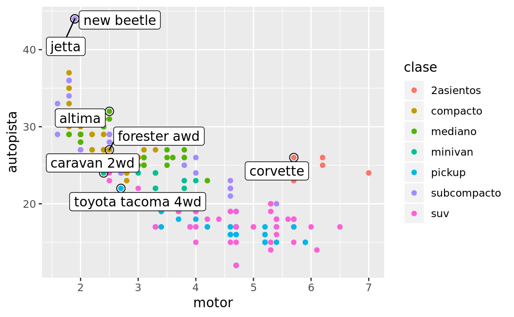
Ten en cuenta otra técnica muy práctica utilizada aquí: agregué una segunda capa de puntos grandes y huecos para resaltar los puntos que etiqueté.
A veces puedes usar la misma idea para reemplazar la leyenda con etiquetas colocadas directamente en tu gráfico. Los resultados no son maravillosos para este gráfico en particular, pero tampoco son tan malos. (theme(legend.position = "none") desactiva la leyenda — hablaremos de ello en breve).
clase_promedio <- millas %>%
group_by(clase) %>%
summarise(
motor = median(motor),
autopista = median(autopista)
)
ggplot(millas, aes(motor, autopista, colour = clase)) +
ggrepel::geom_label_repel(aes(label = clase),
data = clase_promedio,
size = 6,
label.size = 0,
segment.color = NA
) +
geom_point() +
theme(legend.position = "none")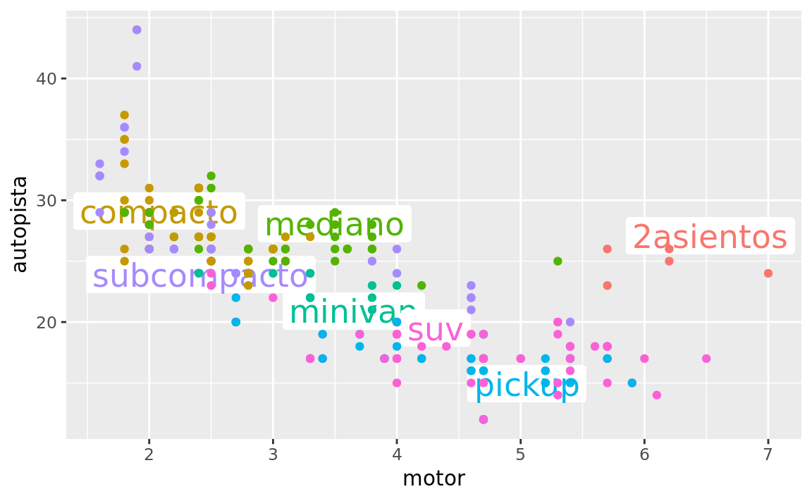
Alternativamente puede que quieras agregar una única etiqueta al gráfico, pero de todas formas necesitarás generar un conjunto de datos. Puede ocurrir que desees ubicar la etiqueta en la esquina del gráfico, en ese caso es conveniente crear un nuevo marco de datos usando summarise() para calcular los valores máximos de x e y.
etiqueta <- millas %>%
summarise(
motor = max(motor),
autopista = max(autopista),
etiqueta = "El aumento del tamaño del motor está \nrelacionado con la disminución en el gasto de combustible."
)
ggplot(millas, aes(motor, autopista)) +
geom_point() +
geom_text(aes(label = etiqueta), data = etiqueta, vjust = "top", hjust = "right")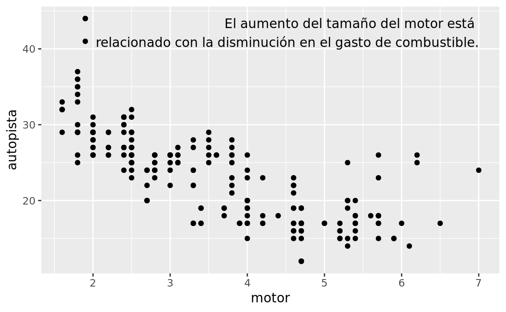
Si deseas colocar el texto exactamente en los bordes del gráfico puedes usar +Inf y -Inf. Como ya no estamos calculando las posiciones de millas, podemos usar tibble() para crear el conjunto de datos:
etiqueta <- millas %>%
summarise(
motor = Inf,
autopista = Inf,
etiqueta = "El aumento del tamaño del motor está \nrelacionado con la disminución en el gasto de combustible."
)
ggplot(millas, aes(motor, autopista)) +
geom_point() +
geom_text(aes(label = etiqueta), data = etiqueta, vjust = "top", hjust = "right")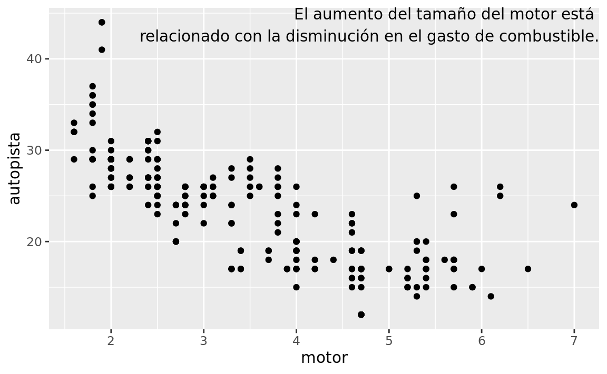
En estos ejemplos, separé manualmente la etiqueta en líneas usando “”. Otra posibilidad es usar stringr::str_wrap() para agregar saltos de línea automáticamente, dado el número de caracteres que deseas por línea:
"El aumento del tamaño del motor está relacionado con la disminución en el gasto de combustible." %>%
stringr::str_wrap(width = 40) %>%
writeLines()
#> El aumento del tamaño del motor está
#> relacionado con la disminución en el
#> gasto de combustible.Ten en cuenta el uso de hjust y vjust para controlar la alineación de la etiqueta. La figura 26.1 muestra las nueve combinaciones posibles.
Figure 26.1: Las nueve combinaciones posibles con hjust y vjust.
Recuerda que además de geom_text(), en ggplot2 tienes muchos otros geoms disponibles para ayudar a agregar notas a tu gráfico . Algunas ideas:
Emplea
geom_hline()ygeom_vline()para agregar líneas de referencia. A menudo las hago gruesas (size = 2) y blancas (color = white), y las dibujo debajo de la primera capa de datos. Eso las hace fáciles de ver, sin distraer la atención de los datos.Emplea
geom_rect()para dibujar un rectángulo alrededor de los puntos de interés. Los límites del rectángulo están definidos por las estéticasxmin,xmax,ymin,ymax.Emplea
geom_segment()con el argumentoarrowpara destacar un punto en particular con una flecha. Usa la estéticaxeypara definir la ubicación inicial, yxendyyendpara definir la ubicación final.
¡El único límite es tu imaginación! (y tu paciencia para posicionar las anotaciones de forma estéticamente agradable)
26.3.1 Ejercicios
Usa las infinitas posiciones que permite
geom_text()para colocar texto en cada una de las cuatro esquinas del gráfico.Lee la documentación de la función
annotate(). ¿Cómo puedes usarla para agregar una etiqueta de texto a un gráfico sin tener que crear un tibble?¿Cómo interactúan las etiquetas producidas por
geom_text()con la separación en facetas? ¿Cómo puedes agregar una etiqueta a una sola faceta? ¿Cómo puedes poner una etiqueta diferente en cada faceta? (Sugerencia: piensa en los datos subyacentes).¿Qué argumentos para
geom_label()controlan la apariencia de la caja que se ve atrás?¿Cuáles son los cuatro argumentos de
arrow()? ¿Cómo funcionan? Crea una serie de gráficos que demuestren las opciones más importantes.
26.4 Escalas
La tercera forma en que puedes mejorar tu gráfico para comunicar es ajustar las escalas. Las escalas controla el mapeo de los valores de los datos a cosas que puedes percibir. Normalmente, ggplot2 agrega escalas automáticamente. Por ejemplo, cuando tipeas:
ggplot(millas, aes(motor, autopista)) +
geom_point(aes(colour = clase))ggplot2 agrega automáticamente escalas predeterminadas detrás de escena:
ggplot(millas, aes(motor, autopista)) +
geom_point(aes(colour = clase)) +
scale_x_continuous() +
scale_y_continuous() +
scale_colour_discrete()Ten en cuenta que los nombres de las escalas comienzan siempre igual: scale_ seguido del nombre de la estética, luego _ y finalmente el nombre de la escala. Las escalas predeterminadas se nombran según el tipo de variable con la que se alinean: continua, discreta, fecha y hora (datetime) o fecha. Hay muchas escalas no predeterminadas que aprenderás a continuación.
Las escalas predeterminadas se han elegido cuidadosamente para ser adecuadas para una gama amplia de valores. Sin embargo, es posible que desees sobrescribir los valores predeterminados por dos razones:
Es posible que desees modificar algunos de los parámetros de la escala predeterminada. Esto te permite hacer cosas como cambiar los intervalos de valores en los ejes o las etiquetas de cada valor visible.
Es posible que desees reemplazar la escala por completo, y utilizar un algoritmo completamente diferente. Por lo general tu opción será mejor que la predeterminada ya que sabes más acerca de los datos.
26.4.1 Marcas de los ejes y leyendas
Hay dos argumentos principales que afectan la apariencia de las marcas, del inglés ticks, en los ejes y las leyendas:breaks y labels, del inglés quiebre y etiqueta respectivamente. Los breaks controlan la posición de las marcas en los ejes o los valores asociados con las leyendas. Las labels controlan la etiqueta de texto asociada con cada marca/leyenda. El uso más común de los breaks es redefinir la opción predeterminada:
ggplot(millas, aes(motor, autopista)) +
geom_point() +
scale_y_continuous(breaks = seq(15, 40, by = 5))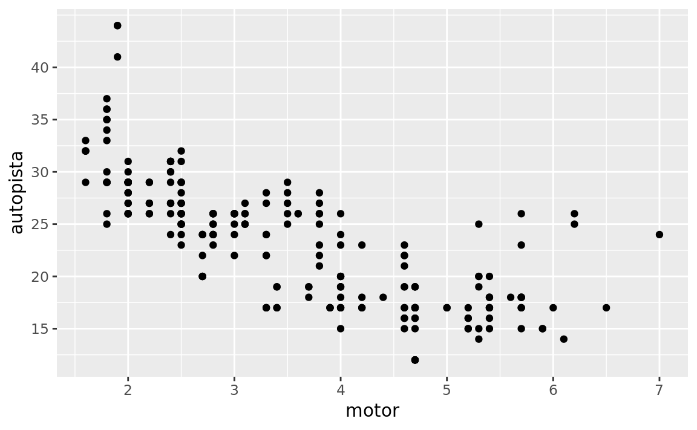
Puedes usar labels de la misma manera (un vector de caracteres de la misma longitud que breaks), o puedes establecerlas como NULL del inglés nulo, para suprimir las etiquetas por completo. Esto es útil para mapas, o para publicar gráficos donde no puedes compartir los números absolutos.
ggplot(millas, aes(motor, autopista)) +
geom_point() +
scale_x_continuous(labels = NULL) +
scale_y_continuous(labels = NULL)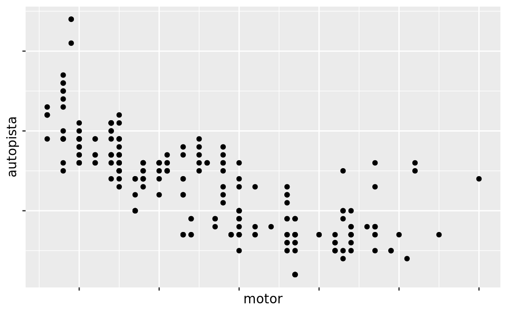
También puedes usar breaks y labels para controlar la apariencia de las leyendas. En conjunto, los ejes y las leyendas se llaman guías. Los ejes se usan para la estética de x e y; las leyendas se usan para todo lo demás.
Otro uso de los breaks es cuando tienes relativamente pocos puntos de datos y deseas resaltar exactamente dónde se producen las observaciones. Como ejemplo, el siguiente gráfico muestra cuándo comenzó y terminó su mandato cada presidente de los Estados Unidos.
presidencial %>%
mutate(id = 33 + row_number()) %>%
ggplot(aes(inicio, id)) +
geom_point() +
geom_segment(aes(xend = fin, yend = id)) +
scale_x_date(NULL, breaks = presidencial$inicio, date_labels = "'%y")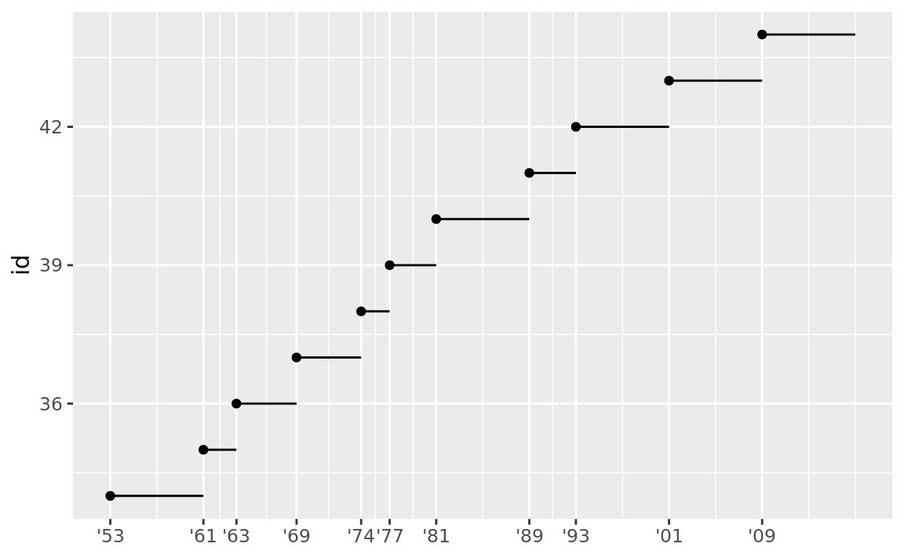
Ten en cuenta que la especificación de breaks y labels para escalas en formato de fecha y fecha y hora es ligeramente diferente:
date_labelstoma en cuenta la especificación de formato, en la misma forma queparse_datetime().date_breaks(no se muestra aquí), toma una cadena como “2 días” o “1 mes”.
26.4.2 Diseño de leyendas
Con mayor frecuencia utilizarás breaks y labels para ajustar los ejes. Aunque ambos también funcionan con leyendas, hay algunas otras técnicas que podrías usar.
Para controlar la posición general de la leyenda, debes usar una configuración de theme() del inglés tema. Volveremos a los temas al final del capítulo, pero en resumen, controlan las partes del gráfico que no son de datos. La configuración del tema legend.position del inglés posición de la leyenda, controla dónde se dibuja la leyenda:
base <- ggplot(millas, aes(motor, autopista)) +
geom_point(aes(colour = clase))
base + theme(legend.position = "left")
base + theme(legend.position = "top")
base + theme(legend.position = "bottom")
base + theme(legend.position = "right") # the default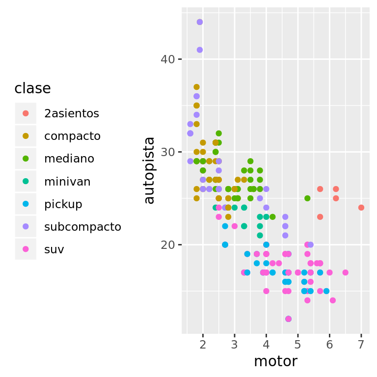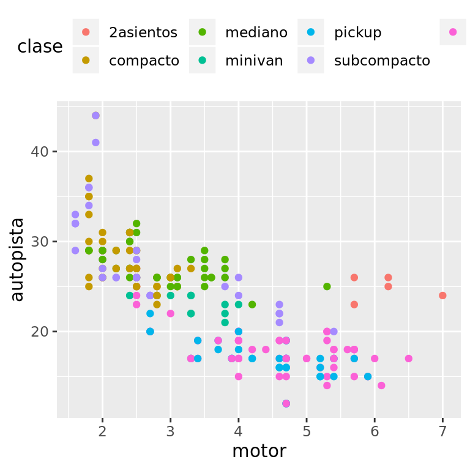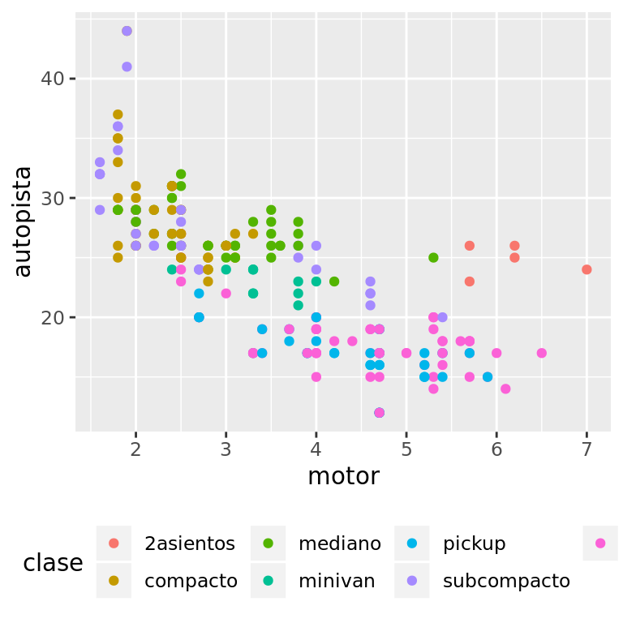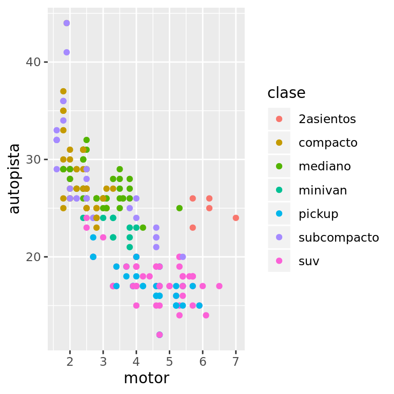
También puedes usar legend.position = "none" para suprimir por completo la visualización de la leyenda.
Para controlar la visualización de leyendas individuales, usa guides() junto con guide_legend() o guide_colourbar(). El siguiente ejemplo muestra dos configuraciones importantes: controlar el número de filas que usa la leyenda con nrow, y redefinir una de las estéticas para agrandar los puntos. Esto es particularmente útil si has usado un valor de alfa bajo para mostrar muchos puntos en un diagrama.
ggplot(millas, aes(motor, autopista)) +
geom_point(aes(colour = clase)) +
geom_smooth(se = FALSE) +
theme(legend.position = "bottom") +
guides(colour = guide_legend(nrow = 1, override.aes = list(size = 4)))
#> `geom_smooth()` using method = 'loess' and formula 'y ~ x'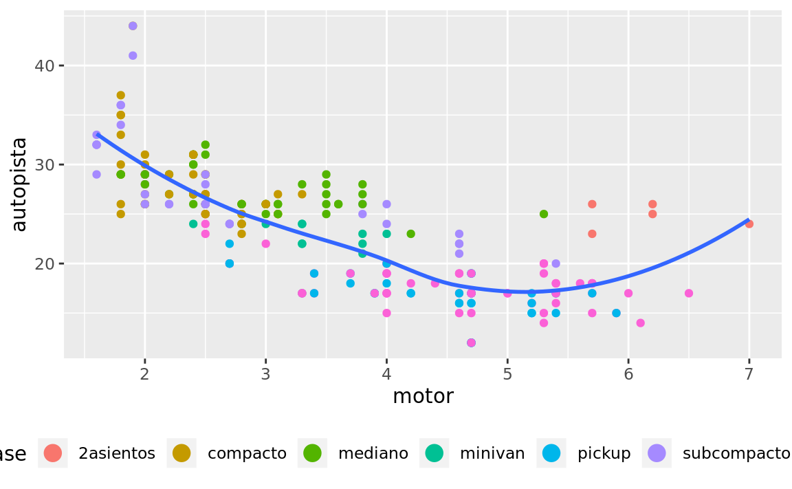
26.4.3 Reemplazando una escala
En lugar de simplemente modificar un poco los detalles, puedes reemplazar la escala por completo. Hay dos tipos de escalas que es probable que desees cambiar: escalas de posición continua y escalas de color. Afortunadamente, los mismos principios se aplican a todos los demás aspectos estéticos, por lo que una vez que hayas dominado la posición y el color serás capaz de realizar rápidamente otros reemplazos de escala.
Esto es muy útil para graficar transformaciones de tu variable. A modo de ejemplo, como hemos visto en diamond prices, es más fácil ver la relación precisa entre quilate y precio si aplicamos una transformación logarítmica en base 10:
ggplot(diamantes, aes(quilate, precio)) +
geom_bin2d()
ggplot(diamantes, aes(log10(quilate), log10(precio))) +
geom_bin2d()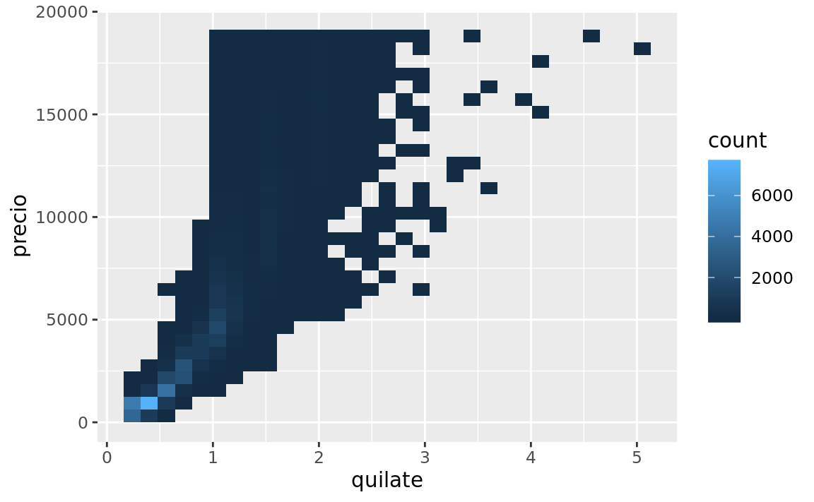
Sin embargo, la desventaja de esta transformación es que los ejes ahora están etiquetados con los valores transformados, por lo que se vuelve difícil interpretar el gráfico. En lugar de hacer la transformación en el mapeo estético, podemos hacerlo con la escala. Esto es visualmente idéntico, excepto que los ejes están etiquetados en la escala original de los datos.
ggplot(diamantes, aes(quilate, precio)) +
geom_bin2d() +
scale_x_log10() +
scale_y_log10()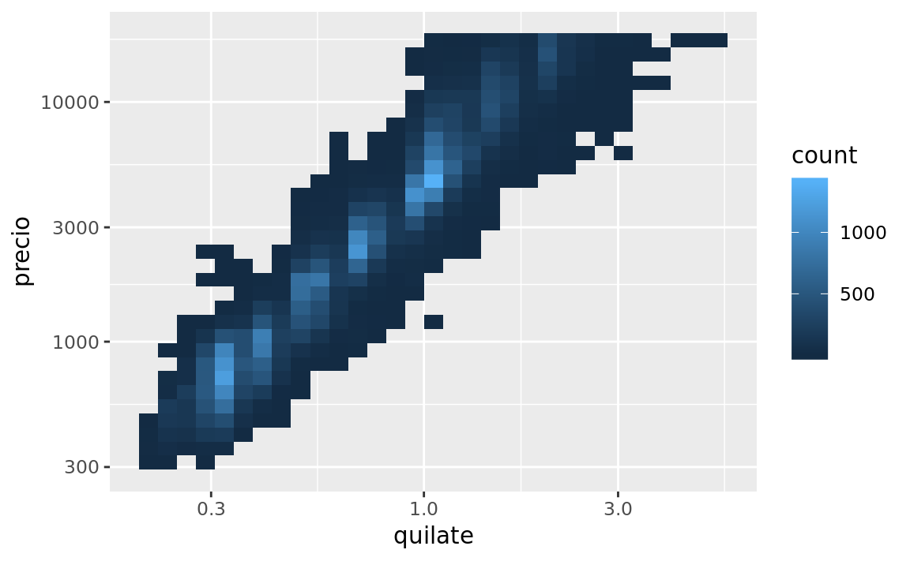
Otra escala que se personaliza con frecuencia es el color. La escala categórica predeterminada selecciona los colores que están espaciados uniformemente alrededor del círculo cromático. Otras alternativas útiles son las escalas de ColorBrewer que han sido ajustadas manualmente para que funcionen mejor para personas con tipos comunes de daltonismo. Los dos gráficos de abajo se ven similares, sin embargo hay suficiente diferencia en los tonos rojo y verde tal que los puntos de la derecha pueden distinguirse incluso por personas con daltonismo rojo-verde.
ggplot(millas, aes(motor, autopista)) +
geom_point(aes(color = traccion))
ggplot(millas, aes(motor, autopista)) +
geom_point(aes(color = traccion)) +
scale_colour_brewer(palette = "Set1")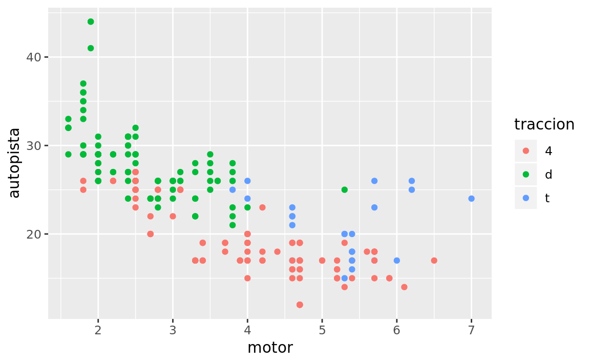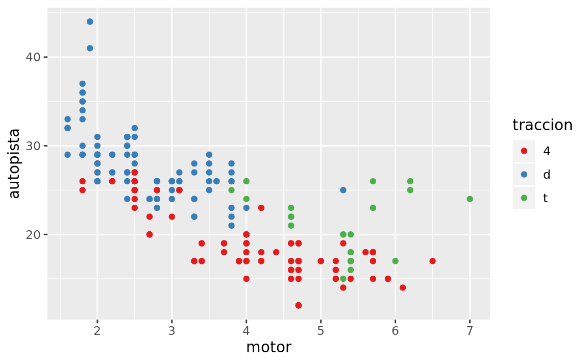
No olvides las técnicas más simples. Si solo hay unos pocos colores, puedes agregar un mapeo de forma redundante. Esto también ayudará a asegurar que tu gráfico sea interpretable en blanco y negro.
ggplot(millas, aes(motor, autopista)) +
geom_point(aes(color = traccion, shape = traccion)) +
scale_colour_brewer(palette = "Set1")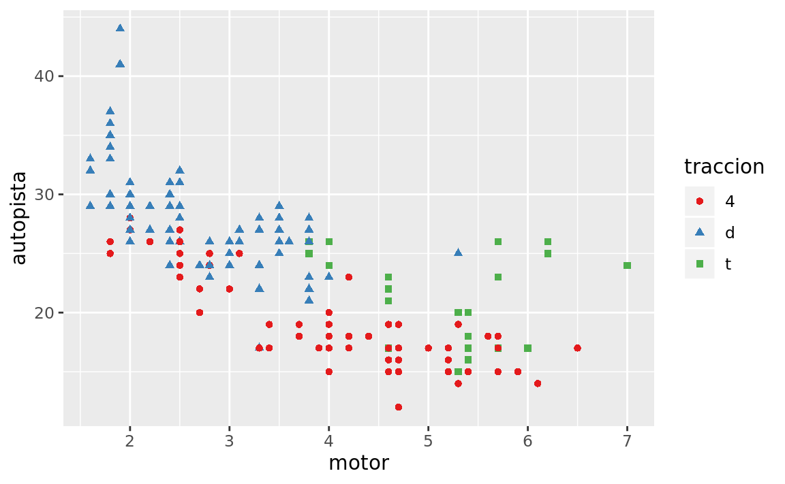
Las escalas de ColorBrewer están documentadas en línea en http://colorbrewer2.org/ y están disponibles en R en el paquete RColorBrewer de Erich Neuwirth. La figura 26.2 muestra la lista completa de paletas de colores disponibles. Las paletas secuenciales (arriba) y divergentes (abajo) son particularmente útiles si sus valores categóricos están ordenados o tienen un “centro”. Esto a menudo ocurre si has utilizado cut() para convertir una variable continua en una variable categórica.

Figure 26.2: All ColourBrewer scales.
Cuando tengas un mapeo predefinido entre valores y colores, usa scale_colour_manual(). Por ejemplo, si mapeamos los partidos presidenciales de Estados Unidos en color, queremos usar el mapeo estándar de color rojo para republicanos y azul para demócratas:
presidencial %>%
mutate(id = 33 + row_number()) %>%
ggplot(aes(inicio, id, colour = partido)) +
geom_point() +
geom_segment(aes(xend = fin, yend = id)) +
scale_colour_manual(values = c(Republicano = "red", Demócrata = "blue"))
#> Warning: Removed 5 rows containing missing values (geom_point).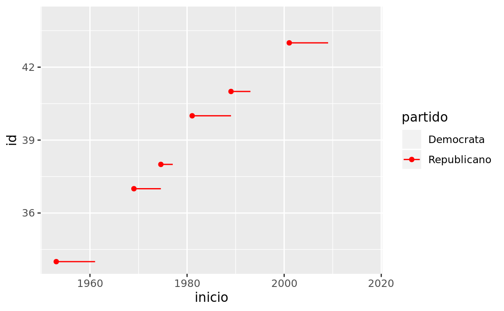
Para generar una escala de color para variables continuas , puedes usar built in scale_colour_gradient() o scale_fill_gradient(). Si tienes una escala divergente, puedes usar scale_colour_gradient2(). Eso tepermite dar, por ejemplo, diferentes colores a valores positivos y negativos. Esto a veces también es útil si quieres distinguir puntos por encima o por debajo de la media.
Otra opción es scale_colour_viridis() proporcionada por el paquete viridis. Es un análogo continuo de las escalas categóricas de ColorBrewer. Los diseñadores, Nathaniel Smith y Stéfan van der Walt, adaptaron cuidadosamente una paleta de color para variables continuas que tiene buenas propiedades perceptuales. Aquí hay un ejemplo de viridis:
df <- tibble(
x = rnorm(10000),
y = rnorm(10000)
)
ggplot(df, aes(x, y)) +
geom_hex() +
coord_fixed()
ggplot(df, aes(x, y)) +
geom_hex() +
viridis::scale_fill_viridis() +
coord_fixed()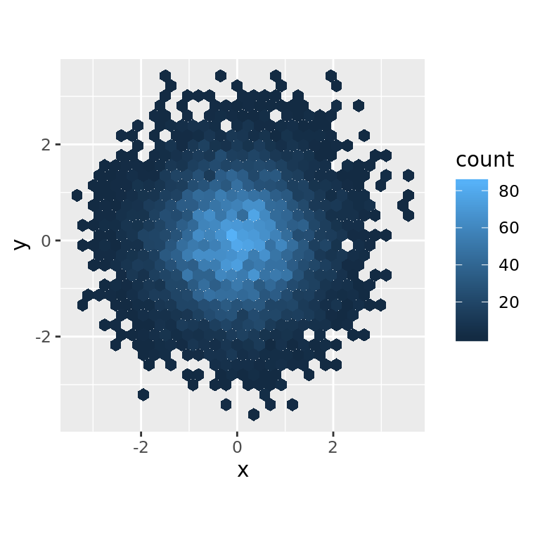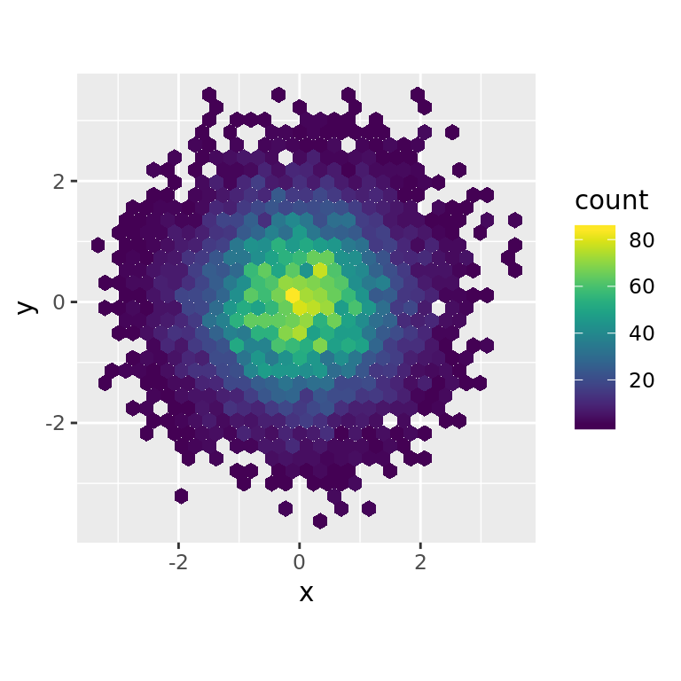
Ten en cuenta que todas las escalas de color vienen en dos variedades: scale_colour_x() y scale_fill_x() para la estética color y fill, respectivamente (las escalas de color se expresan tanto en inglés americano como británico).
26.4.4 Ejercicios
¿Por qué el siguiente código no reemplaza la escala predeterminada?
ggplot(df, aes(x, y)) + geom_hex() + scale_colour_gradient(low = "white", high = "red") + coord_fixed()¿Cuál es el primer argumento para cada escala? ¿Cómo se compara con
labs()?Cambia la visualización de los términos presidenciales de las siguientes maneras:
- Combinando las dos variantes que se muestran arriba.
- Mejorando la visualización del eje y.
Etiquetando cada término con el nombre del presidente.- Agregandoetiquetas informativas al gráfico.
- Poniendo intervalos de 4 años (¡esto es más complicado de lo que parece!).
Utiliza
override.aespara que la leyenda en el siguiente gráfico sea más fácil de ver:ggplot(diamantes, aes(quilate, precio)) + geom_point(aes(colour = corte, alpha = 1 / 20))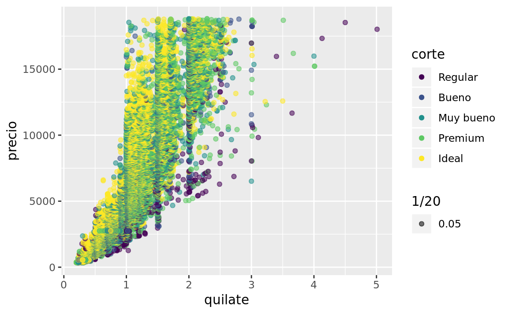
26.5 Haciendo Zoom
Hay tres formas de controlar los límites de un gráfico:
- Modificando los datos que se grafican
- Estableciendo los límites en cada escala
- Estableciendo
xlimyylimencoord_cartesian()
Para ampliar una región del gráfico, generalmente es mejor usar coord_cartesian().Compara los siguientes dos gráficos:
ggplot(millas, mapping = aes(motor, autopista)) +
geom_point(aes(color = clase)) +
geom_smooth() +
coord_cartesian(xlim = c(5, 7), ylim = c(10, 30))
millas %>%
filter(motor >= 5, motor <= 7, autopista >= 10, autopista <= 30) %>%
ggplot(aes(motor, autopista)) +
geom_point(aes(color = clase)) +
geom_smooth() 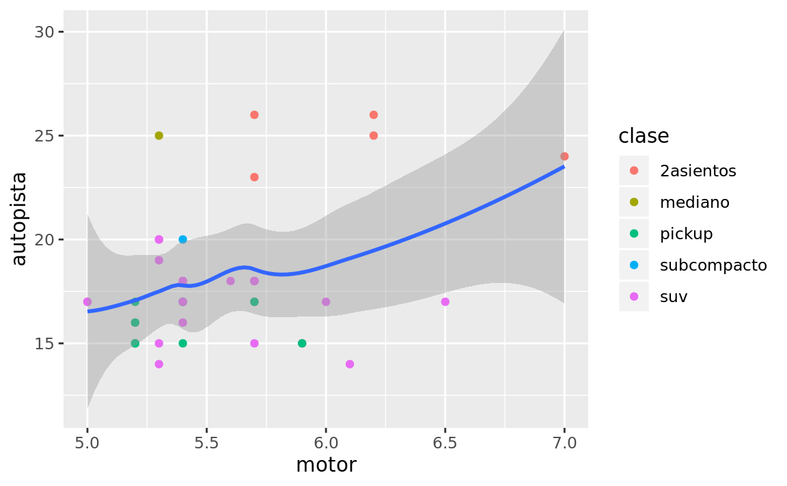
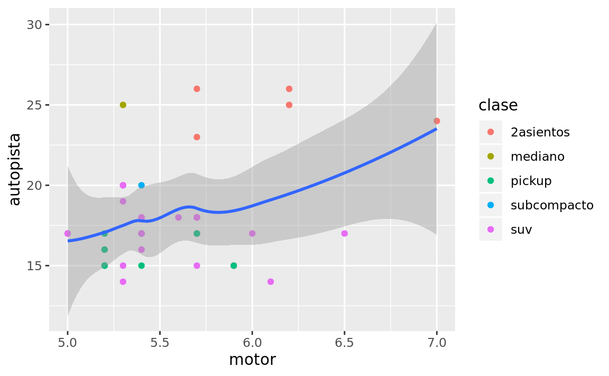
También puedes establecer limits del inglés límites en escalas individuales. La reducción de los límites del gráfico es equivalente a seleccionar un subconjunto de los datos. En general es más útil si deseas expandir los límites, por ejemplo, cuando quieres hacer coincidir escalas de diferentes gráficos. A modo de ejemplo, si extraemos dos clases de automóviles y los graficamos por separado, son difíciles de comparar ya que las tres escalas (el eje x, el eje y y la estética del color) tienen rangos diferentes.
suv <- millas %>% filter(clase == "suv")
compacto <- millas %>% filter(clase == "compact")
ggplot(suv, aes(motor, autopista, colour = traccion)) +
geom_point()
ggplot(compacto, aes(motor, autopista, colour = traccion)) +
geom_point()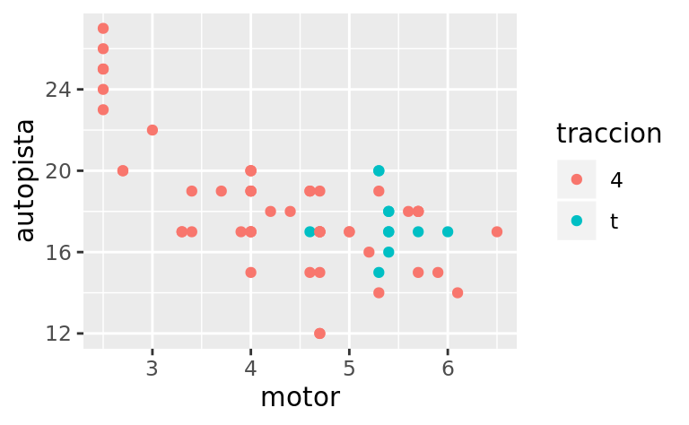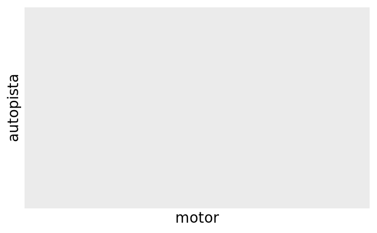 Una forma de superar este problema es compartir la escala entre varios gráficos, estableciendo una escala única a partir de los límites del conjunto de datos completo.
x_scale <- scale_x_continuous(limits = range(millas$motor))
y_scale <- scale_y_continuous(limits = range(millas$autopista))
col_scale <- scale_colour_discrete(limits = unique(millas$traccion))
ggplot(suv, aes(motor, autopista, colour = traccion)) +
geom_point() +
x_scale +
y_scale +
col_scale
ggplot(suv, aes(motor, autopista, colour = traccion)) +
geom_point() +
x_scale +
y_scale +
col_scale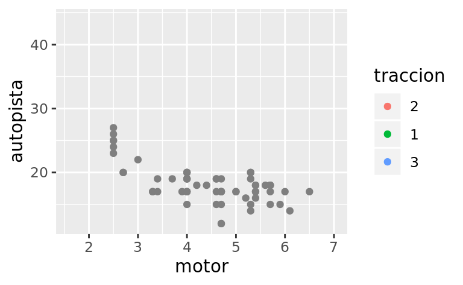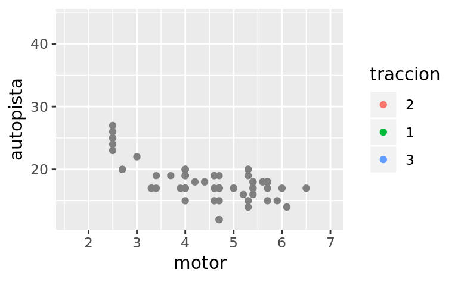
En este caso particular podrías haber simplemente empleado la separación en facetas, pero esta técnica es más útil en general, por ejemplo, si deseas realizar gráficos en varias páginas de un informe.
26.6 Temas
Finalmente, puedes personalizar los elementos de tu gráfico que no son datos aplicando un tema:
ggplot(millas, aes(motor, autopista)) +
geom_point(aes(color = clase)) +
geom_smooth(se = FALSE) +
theme_bw()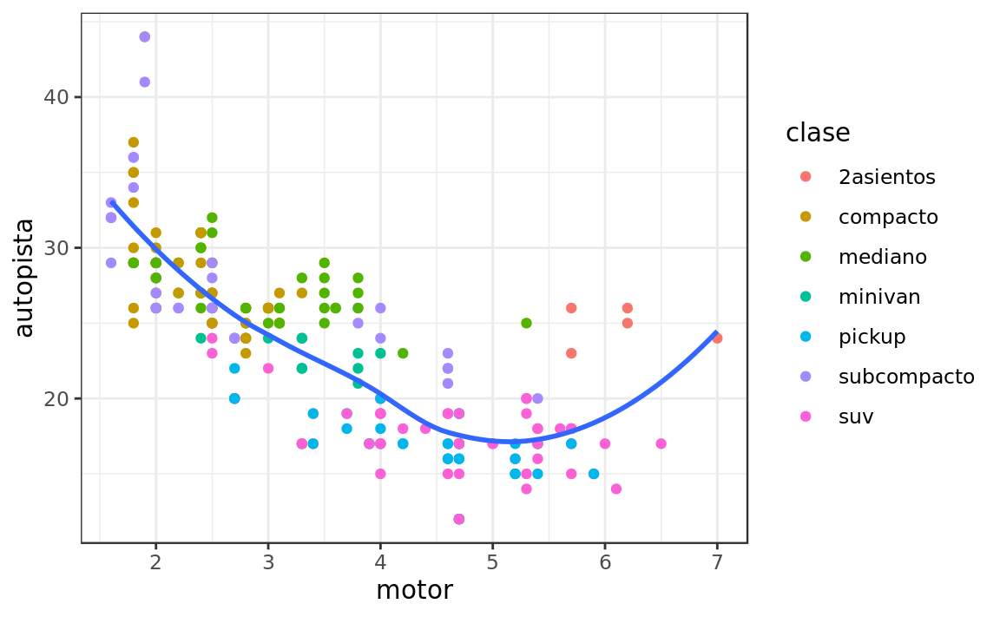
ggplot2 incluye ocho temas por defecto, como se muestra en la Figura 26.3. Muchos otros están incluidos en paquetes adicionales como ggthemes (https://github.com/jrnold/ggthemes), de Jeffrey Arnold.

Figure 26.3: The eight themes built-in to ggplot2.
Muchas personas se preguntan por qué el tema predeterminado tiene un fondo gris. Esta fue una elección deliberada ya que el fondo gris pone los datos por delante mientras siguen siendo visibles las líneas de la cuadrícula. Las líneas blancas de la cuadrícula son visibles (lo cual es importante porque ayudan significativamente a evaluar la posición), pero tienen poco impacto visual y son fáciles de eliminar. El fondo gris le da a al gráfico un color tipográfico similar al del texto, asegurando que los gráficos encajen con el flujo de un documento sin saltar con un fondo blanco brillante. Finalmente, el fondo gris crea un campo continuo de color que asegura que el gráfico se perciba como una sola entidad visual.
También es posible controlar componentes individuales de cada tema, como el tamaño y el color de la fuente utilizada para el eje y. Desafortunadamente, este nivel de detalle está fuera del alcance de este libro, por lo que deberás leer el libro ggplot2 book para obtener todos los detalles. También puedes crear tus propios temas, si estás tratando de hacer coincidir un estilo corporativo o de revista en particular.
26.7 Guardando tus gráficos
Hay dos formas principales de obtener tus gráficos desde R: ggsave() y knitr. ggsave() guardarán el gráfico más reciente en el disco.
ggplot(millas, aes(motor, autopista)) + geom_point()
ggsave("my-plot.pdf")
#> Saving 6 x 3.7 in imageSi no especificas width y height, del inglés el ancho y el alto, se usarán las dimensiones del dispositivo empleado para graficar. Para que el código sea reproducible, necesitarás especificarlos.
En general, sin embargo, creo que deberías armar tus informes finales utilizando R Markdown, por lo que quiero centrarme en las opciones importantes para los bloques de código que debes conocer para graficar. Puedes obtener más información sobre ggsave() en la documentación.
26.7.1 Redimensionar una figura
El mayor desafío de los gráficos en R Markdown es conseguir que tus figuras tengan el tamaño y la forma correctos. Hay cinco opciones principales que controlan el tamaño de la figura: fig.width, fig.height, fig.asp, out.width y out.height. El tamaño de la imagen es un desafío porque hay dos tamaños (el tamaño de la figura creada por R y el tamaño al que se inserta en el documento de salida) y varias formas de especificarlo (es decir, altura, ancho y relación de aspecto: elige dos de tres).
Solo uso tres de las cinco opciones:
Encuentro estéticamente más agradable que los gráficos tengan un ancho consistente. Para hacer cumplir esto, configuro
fig.width = 6(6 “) yfig.asp = 0.618(la proporción áurea) en los valores predeterminados. Luego, en bloques individuales, solo ajustofig.asp.Controlo el tamaño de salida con
out.widthy lo configuro a un porcentaje del ancho de línea). De manera predeterminada,out.width = "70%"yfig.align = "center". Eso le da a los gráficos cierto espacio para respirar, sin ocupar demasiado espacio.Para poner múltiples gráficos en una sola fila, establezco
out.width en 50%para dos gráficos,33%en 3 gráficos, o25%en 4 gráficos, ysetfig.align = "default". Dependiendo de lo que intento ilustrar (por ejemplo, mostrar datos o variacionesdel gráfico), también modificaréfig.widthcómo se explica a continuación.
Si observas que tienes que entrecerrar los ojos para leer el texto de tu gráfico, debes ajustar fig.width. Si fig.width es mayor que el tamaño de la figura en el documento final, el texto será demasiado pequeño; si fig.width es más pequeño, el texto será demasiado grande. A menudo necesitarás experimentar un poco para calcular la proporción correcta entre fig.width y el ancho asociado en tu documento. Para ilustrar el principio, los siguientes tres gráficos tienen fig.width de 4, 6 y 8, respectivamente:
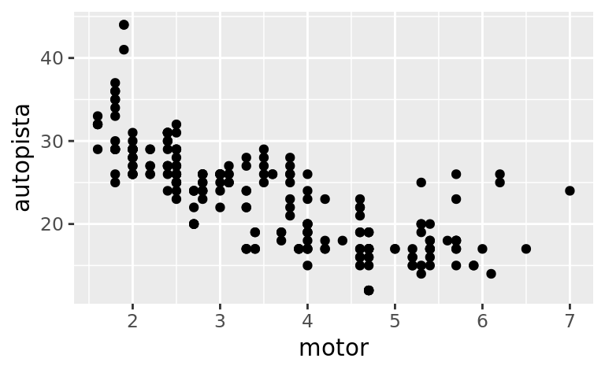  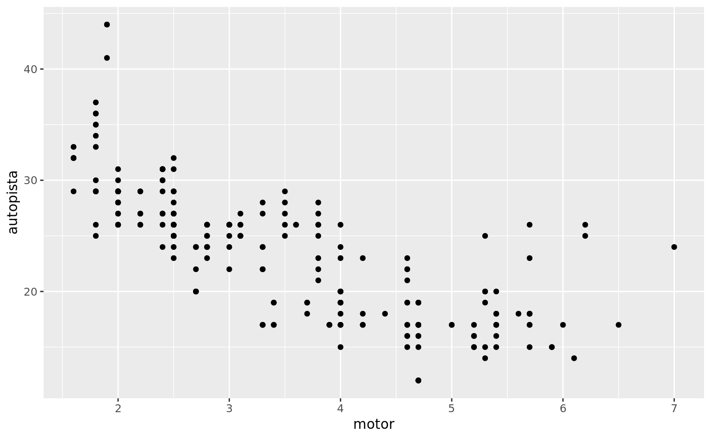
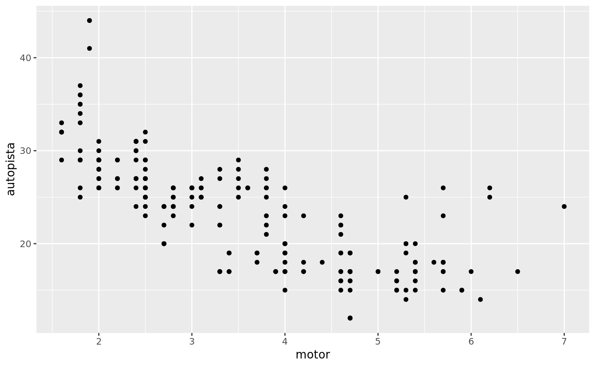
Si deseas asegurarte que el tamaño de fuente es el mismo en todas tus figuras, al establecer out.width, también necesitarás ajustar fig.width para mantener la misma proporción en relación al out.width predeterminado. Por ejemplo, si tu valor predeterminado de fig.width es 6 y out.width es 0.7, cuando establezcas out.width = "50%" necesitarás establecer fig.width a 4.3 (6 * 0.5 / 0.7).
26.7.2 Otras opciones importantes
Al mezclar código y texto, como hago en este libro, recomiendo configurar fig.show = "hold" para que los gráficos se muestren después del código. Esto tiene el agradable efecto secundario de obligarte a dividir grandes bloques de código con sus explicaciones.
Para agregar un título al gráfico, usa fig.cap. En R Markdown esto cambiará la figura de “inline” a “floating”.
Si estás produciendo resultados en formato PDF, el tipo de gráficos predeterminado es PDF. Esta es una buena configuración predeterminada porque los PDF son gráficos vectoriales de alta calidad. Sin embargo, pueden generar gráficos muy grandes y lentos si muestras miles de puntos. En ese caso, configura dev = "png" para forzar el uso de PNG. Son de calidad ligeramente inferior, pero serán mucho más compactos.
Es una buena idea darles nombres a los bloques de código que producen figuras, incluso si no etiquetas rutinariamente otros bloques. Etiquetar el bloque se utiliza para generar el nombre de archivo del gráfico en el disco, por lo que darle un nombre a los bloques hace que sea mucho más fácil seleccionar gráficas y reutilizarlas en otras circunstancias (por ejemplo, si deseas colocar rápidamente un solo gráfico en un correo electrónico o un tweet).
26.8 Aprendiendo más
El mejor lugar para aprender más es el libro de ggplot2: ggplot2: Elegant graphics for data analysis. Este explica con mucha más profundidad la teoría subyacente y tiene muchos más ejemplos de cómo combinar las piezas individuales para resolver problemas prácticos. Desafortunadamente, el libro no está disponible en línea de forma gratuita, aunque puede encontrar el código fuente en https://github.com/hadley/ggplot2-book.
Otro gran recurso es la guía de extensiones ggplot2 http://www.ggplot2-exts.org/. Este sitio enumera muchos de los paquetes que amplían ggplot2 con nuevos geoms y escalas. Es un buen lugar para comenzar si tratas de hacer algo que parece difícil con ggplot2.